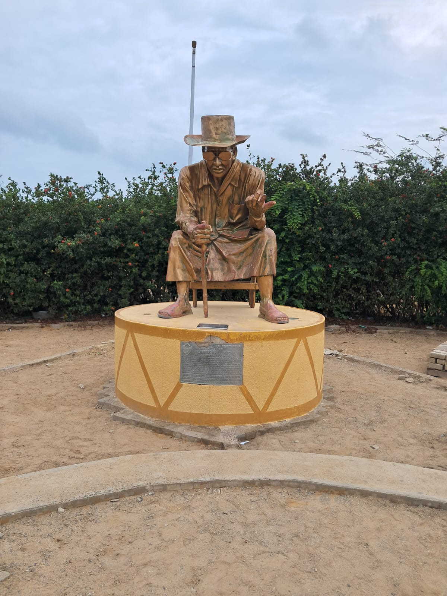

Universidad de La Guajira
Ingeniería de Sistemas
Antes de continuar, completa el siguiente formulario (El formulario es anónimo)

Ubicación: Riohacha, La Guajira, Colombia
Autor: Por Investigar
Año: Por Investigar
El Palabrero Wayúu, conocido en lengua wayuunaiki como Putchipuu, es una figura fundamental dentro de la cultura del pueblo Wayúu. Su rol es mediar y resolver conflictos entre clanes mediante el diálogo y la palabra
En 2010, la UNESCO declaró el sistema normativo Wayúu aplicado por el Palabrero como Patrimonio Cultural Inmaterial de la Humanidad, reconociendo su valor universal como sistema de justicia en la palabra.
Este monumento representa la identidad cultural del pueblo Wayúu y su legado de resolución pacífica de conflictos, siendo un símbolo vivo de la diversidad cultural de La Guajira.
Pon a prueba tus conocimientos con este pequeño quiz
Descubre las mejores rutas entre los sitios turísticos de la ciudad usando el algoritmo de Dijkstra